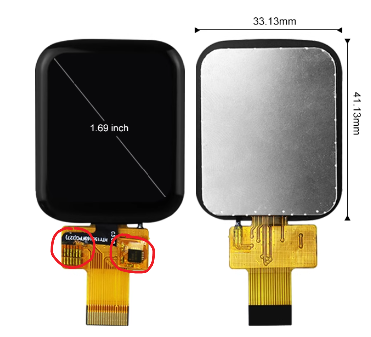
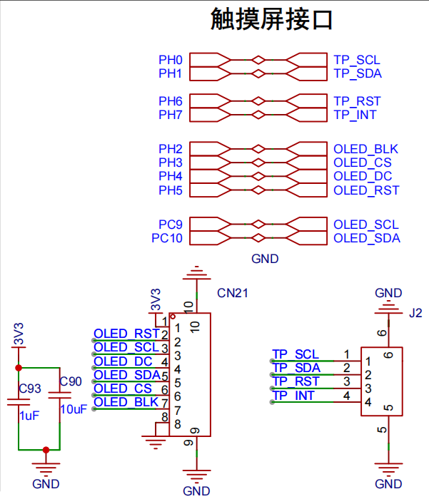
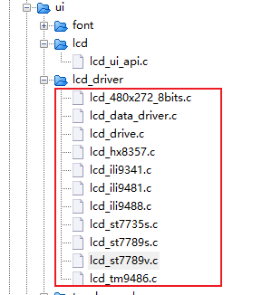
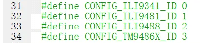
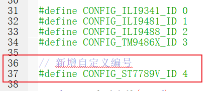
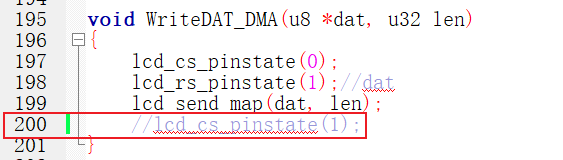
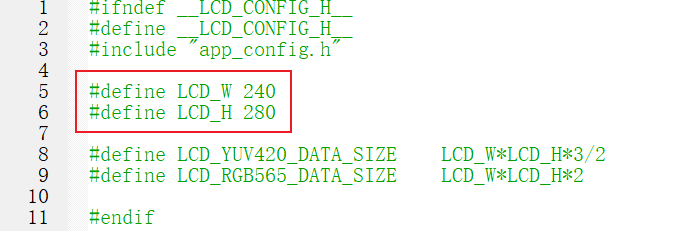

<!DOCTYPE lake>
<p data-lake-id="ub3662a2a" id="ub3662a2a"><span data-lake-id="u78d712c5" id="u78d712c5">通常市面上的触摸屏都是由两部分组成的，一部分是显示屏，另外一部分是触摸屏。对于我们开发者来说，我们就需要分别写这两部分的驱动代码。</span></p><p data-lake-id="u5c36dc1e" id="u5c36dc1e"><span data-lake-id="u8db6d38b" id="u8db6d38b">观察下面的这块触摸屏，我们可以清晰的看到触摸芯片与显示屏是后期焊接在一起的。</span></p><p data-lake-id="u09778a5e" id="u09778a5e" style="text-align: center"></p><h1 data-lake-id="qGBWI" id="qGBWI"><span data-lake-id="u09eae203" id="u09eae203">DevKitBoard.c配置</span></h1><p data-lake-id="ue96ae81d" id="ue96ae81d"><span data-lake-id="u03ca6e7c" id="u03ca6e7c">配置显示器：ST7789V, 分配SPI引脚</span></p><p data-lake-id="u98746e38" id="u98746e38"><span data-lake-id="ub4fe27f6" id="ub4fe27f6">配置触摸屏：CST816T, 配置iic引脚</span></p><p data-lake-id="ua1cb45b6" id="ua1cb45b6"><br/></p><p data-lake-id="u9e1c6282" id="u9e1c6282"></p><h2 data-lake-id="kBopV" data-lake-index-type="2" id="kBopV"><span data-lake-id="u96a12bb1" id="u96a12bb1">触摸屏显示部分配置</span></h2><p data-lake-id="u43bfc86c" id="u43bfc86c"><br/></p><p data-lake-id="u6e5942dd" id="u6e5942dd"><span data-lake-id="u01d84296" id="u01d84296">在杰理的SDK中，有一些屏幕驱动的支持包，有些可以直接使用，有些已经荒废很多年了，无法编译通过</span></p><p data-lake-id="u5df437bc" id="u5df437bc"></p><p data-lake-id="udf0c852c" id="udf0c852c"><span data-lake-id="u221ace84" id="u221ace84">当前1.2.0版本的SDK支持的屏幕仅仅下面这几款</span></p><p data-lake-id="uc84db6c8" id="uc84db6c8"></p><p data-lake-id="u1ea81752" id="u1ea81752"><span data-lake-id="u7e864a72" id="u7e864a72">如果我们想要添加新的屏幕，就需要按照如下步骤进行响应的添加</span></p><h3 data-lake-id="vthzl" data-lake-index-type="2" id="vthzl"><span data-lake-id="u6c1b5beb" id="u6c1b5beb">SPI配置</span></h3><p data-lake-id="ud4486ec2" id="ud4486ec2"><span data-lake-id="ud08f6dfb" id="ud08f6dfb">打开board.c</span></p><span class="yuque-card-unsupported">[codeblock]</span><h3 data-lake-id="i5pZ2" data-lake-index-type="2" id="i5pZ2"><span data-lake-id="uf09213d8" id="uf09213d8">接口定义</span></h3><p data-lake-id="u67c18682" id="u67c18682"><span data-lake-id="u4336792d" id="u4336792d">打开board.c</span></p><span class="yuque-card-unsupported">[codeblock]</span><p data-lake-id="ue327e330" id="ue327e330"><span data-lake-id="u7f29283f" id="u7f29283f">配置完成之后，记得要检查REGISTER_DEVICES(device_table)中有没有配置，</span><code data-lake-id="u6a351d34" id="u6a351d34"><span data-lake-id="uc908eb00" id="uc908eb00">app_config.h</span></code><span data-lake-id="u8cfbc9f6" id="u8cfbc9f6">中有没有启用</span></p><span class="yuque-card-unsupported">[codeblock]</span><p data-lake-id="uf1fbbba2" id="uf1fbbba2"><span data-lake-id="u356676ee" id="u356676ee">​</span><br/></p><h3 data-lake-id="vGd3r" data-lake-index-type="2" id="vGd3r"><span data-lake-id="u9a7e073a" id="u9a7e073a">修改lcd_drive.c</span></h3><p data-lake-id="u75158afe" id="u75158afe"><span data-lake-id="u5a5d1699" id="u5a5d1699">路径为：</span><code data-lake-id="ucf5cb542" id="ucf5cb542"><span data-lake-id="u864b2fc6" id="u864b2fc6">common/ui/lcd_driver/lcd_drive.c</span></code></p><p data-lake-id="u71952959" id="u71952959"><span data-lake-id="u09d8deff" id="u09d8deff">SDK默认支持4款屏幕，我们可以在第30行附近添加自己的屏幕，编号随便填</span></p><p data-lake-id="ubeb6026f" id="ubeb6026f"></p><span class="yuque-card-unsupported">[codeblock]</span><p data-lake-id="uc89337d5" id="uc89337d5"><br/></p><p data-lake-id="u539afedc" id="u539afedc"><span data-lake-id="uae2e6a25" id="uae2e6a25">在</span><code data-lake-id="u641a7461" id="u641a7461"><span data-lake-id="u51979858" id="u51979858">lcd_drive.c</span></code><span data-lake-id="u9f97308b" id="u9f97308b">的第343行添加如下代码</span></p><span class="yuque-card-unsupported">[codeblock]</span><p data-lake-id="uf28809b6" id="uf28809b6"><span data-lake-id="u7f5358b7" id="u7f5358b7">SDK函数有bug, 注释掉第200行，否则可能会出现花屏或者屏幕数据不刷新，</span></p><p data-lake-id="u5dbf9c1b" id="u5dbf9c1b"></p><p data-lake-id="u9e560279" id="u9e560279"><span data-lake-id="ub0bea9c1" id="ub0bea9c1">​</span><br/></p><h3 data-lake-id="uMbec" data-lake-index-type="2" id="uMbec"><span data-lake-id="u4744f2a1" id="u4744f2a1">修改lcd_config.h</span></h3><p data-lake-id="u068d7601" id="u068d7601"><span data-lake-id="u01b0d4e0" id="u01b0d4e0">需要修改</span><code data-lake-id="ud5456a6b" id="ud5456a6b"><span data-lake-id="u5d68a075" id="u5d68a075">ui/include/lcd_config.h</span></code></p><p data-lake-id="u5965fff2" id="u5965fff2"><span data-lake-id="u92df6d0a" id="u92df6d0a">将屏幕尺寸改成实际的尺寸</span></p><p data-lake-id="u93363e23" id="u93363e23"></p><p data-lake-id="u39132f17" id="u39132f17"><span data-lake-id="u11e65e65" id="u11e65e65">​</span><br/></p><p data-lake-id="u32d99b8e" id="u32d99b8e"><span data-lake-id="u1bca9b18" id="u1bca9b18">​</span><br/></p><h2 data-lake-id="XuT7W" data-lake-index-type="2" id="XuT7W"><span data-lake-id="uc664a92f" id="uc664a92f">触摸部分</span></h2><p data-lake-id="ued25c71d" id="ued25c71d"><span data-lake-id="uc80555eb" id="uc80555eb">添加</span><code data-lake-id="u4e412189" id="u4e412189"><span data-lake-id="uac19472f" id="uac19472f">cst816t.c</span></code><span data-lake-id="u275283f1" id="u275283f1">到工程（可任意目录，推荐itheima目录）</span></p><h3 data-lake-id="CB2Vn" data-lake-index-type="2" id="CB2Vn"><span data-lake-id="u2a3f5e35" id="u2a3f5e35">IIC配置</span></h3><span class="yuque-card-unsupported">[codeblock]</span><p data-lake-id="ud30bd832" id="ud30bd832"><span data-lake-id="u8b175684" id="u8b175684">配置完成之后，记得要检查</span><code data-lake-id="u07260814" id="u07260814"><span data-lake-id="u64604e12" id="u64604e12">REGISTER_DEVICES(device_table)</span></code><span data-lake-id="u48564926" id="u48564926">中有没有配置，</span><code data-lake-id="ue8be5351" id="ue8be5351"><span data-lake-id="u3d374df5" id="u3d374df5">app_config.h</span></code><span data-lake-id="u6f53f9c6" id="u6f53f9c6">中有没有定义CONFIG_IIC_ENABLE</span></p><p data-lake-id="uc3ad1e73" id="uc3ad1e73"><span data-lake-id="u97897515" id="u97897515">​</span><br/></p><h2 data-lake-id="TL8HY" data-lake-index-type="2" id="TL8HY"><span data-lake-id="u53869fdc" id="u53869fdc">添加驱动文件</span></h2><p data-lake-id="udff293de" id="udff293de"><span data-lake-id="u42ebb373" id="u42ebb373">如果按照上面的步骤如果自己编写出错，也可以添加修改好的代码</span></p><ul list="uf82d5af1"><li data-lake-id="u1aec111a" fid="ub4007427" id="u1aec111a"><span data-lake-id="u9df0190d" id="u9df0190d">icheima/lcd_st7789v.c</span></li><li data-lake-id="ucec92b13" fid="ub4007427" id="ucec92b13"><span data-lake-id="ua2088fb4" id="ua2088fb4">icheima/cst816t.c</span></li><li data-lake-id="u5b5f4be0" fid="ub4007427" id="u5b5f4be0"><span data-lake-id="ub3b59aa1" id="ub3b59aa1">lcd_drive.c</span></li></ul><h2 data-lake-id="EKWIC" data-lake-index-type="2" id="EKWIC"><span data-lake-id="u2f3f54b1" id="u2f3f54b1">app_config.h配置</span></h2><p data-lake-id="ucd5c740c" id="ucd5c740c"><span data-lake-id="u48cbff06" id="u48cbff06">里面有非常多的宏定义，根据这些宏定义，开关相应的功能</span></p><p data-lake-id="ufef2f545" id="ufef2f545"><br/></p><span class="yuque-card-unsupported">[codeblock]</span><p data-lake-id="u09e17a2c" id="u09e17a2c"><span data-lake-id="ud053cad3" id="ud053cad3">注意将没有用到的UI配置全都禁用掉</span></p><span class="yuque-card-unsupported">[codeblock]</span><h3 data-lake-id="Ii1As" id="Ii1As"><br/></h3><h2 data-lake-id="skTFr" data-lake-index-type="2" id="skTFr"><span data-lake-id="u9da8656e" id="u9da8656e">复制lvgl_main.c</span></h2><p data-lake-id="u58ac5424" id="u58ac5424"><span data-lake-id="u3561684e" id="u3561684e">复制路径为：</span><code data-lake-id="u4c64e8b2" id="u4c64e8b2"><span data-lake-id="u0bb79bd3" id="u0bb79bd3">apps\common\example\third_party\lvgl_v9\lvgl_main.c</span></code></p><p data-lake-id="ufd36199a" id="ufd36199a"><span data-lake-id="uef814cbb" id="uef814cbb">将上述文件内容复制到一个新的文件icheima_lvgl_demo.c中，方便我们对它进行扩展</span></p><p data-lake-id="uec7d93a2" id="uec7d93a2"><span data-lake-id="u1ef29803" id="u1ef29803">​</span><br/></p><p data-lake-id="uee267b8b" id="uee267b8b"><span data-lake-id="u6b60cf5f" id="u6b60cf5f">将第8行</span></p><span class="yuque-card-unsupported">[codeblock]</span><p data-lake-id="u36ae9524" id="u36ae9524"><span data-lake-id="ua8b50d19" id="ua8b50d19">改为：</span></p><span class="yuque-card-unsupported">[codeblock]</span><h3 data-lake-id="zwkNT" data-lake-index-type="2" id="zwkNT"><span data-lake-id="uda148914" id="uda148914">切换其他显示内容</span></h3><p data-lake-id="u8ab282a9" id="u8ab282a9"><span data-lake-id="u3f00643a" id="u3f00643a">该文件示例代码中包含有非常多的LVGL官方示例，通过打开/关闭注释我们可以查看不同的LVGL示例</span></p><p data-lake-id="udb1cbb9d" id="udb1cbb9d"><span data-lake-id="u7a65a73f" id="u7a65a73f">找到函数：</span><code data-lake-id="u07f6506e" id="u07f6506e"><span data-lake-id="ub7934066" id="ub7934066">lvgl_main_task</span></code><span data-lake-id="u9faca51c" id="u9faca51c">，通过注释可以看不同的ui示例程序：</span></p><span class="yuque-card-unsupported">[codeblock]</span><p data-lake-id="uc783c15d" id="uc783c15d"><br/></p><h2 data-lake-id="bfUpB" id="bfUpB"><span data-lake-id="uf888325c" id="uf888325c">其它配置</span></h2><h3 data-lake-id="GRYif" data-lake-index-type="2" id="GRYif"><span data-lake-id="u6d903e1b" id="u6d903e1b">禁用默认UI</span></h3><ol list="u0251af29"><li data-lake-id="uf32fa43c" fid="ue7110886" id="uf32fa43c"><span data-lake-id="uf9de3e8d" id="uf9de3e8d">禁用ui_main.c</span></li></ol><p data-lake-id="ub93a2e0e" id="ub93a2e0e"><span data-lake-id="uefad5248" id="uefad5248">注释掉demo_config.h的USE_DevKitBoard_TEST_DEMO</span></p><span class="yuque-card-unsupported">[codeblock]</span><h3 data-lake-id="iRZ9E" data-lake-index-type="2" id="iRZ9E"><span data-lake-id="u44be2377" id="u44be2377">禁用wifi日志</span></h3><ol list="u38c7d208" start="2"><li data-lake-id="u9dba8b52" fid="u1ccabfc9" id="u9dba8b52"><span data-lake-id="u632b5d49" id="u632b5d49">wifi_demo_task.c 文件注释掉568行的 //stats_display();</span></li></ol><h3 data-lake-id="rjARw" data-lake-index-type="2" id="rjARw"><span data-lake-id="u77915893" id="u77915893">SD卡配置</span></h3><span class="yuque-card-unsupported">[codeblock]</span>